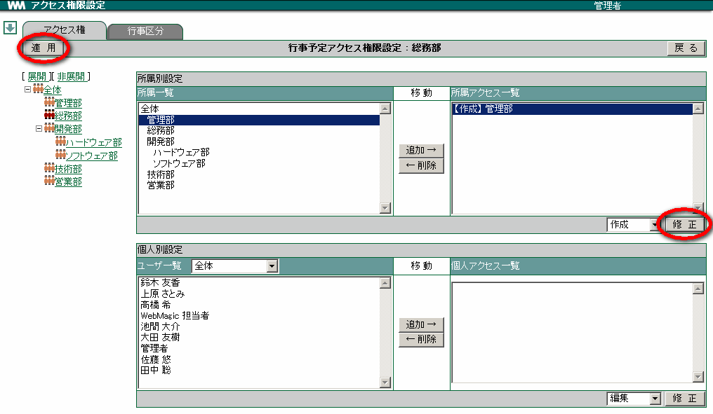
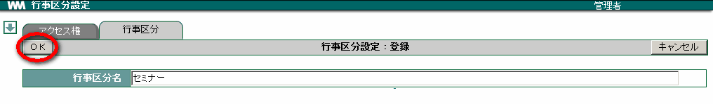
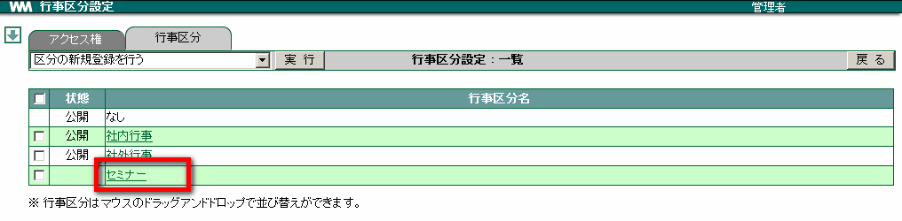

8. 行事予定¶
行事予定では、アクセス権などの設定を行えます。アクセス権は、所属・個人ごとに割り当てることができます。また、行事区分の作成・修正・削除・並び替えを行うことができます。
8.1. 行事予定のアクセス権を設定する¶
メニューの
 をクリックします。
をクリックします。 をクリックします。
をクリックします。左側のツリーからアクセス権を割り当てたい所属をクリックします。

「所属一覧」 からアクセス権を割り当てたい所属を選び、 追加→ をクリックします。

「所属アクセス一覧」 へ追加した所属を選択、プルダウンメニューから権限を選択します。

修正 をクリックし、 適用 をクリックします。

Note
個人へのアクセス権設定も所属と同様の操作で 追加・削除 を行います。
<アクセス権の説明>
| 編集 | 行事を作成することができ、自分または他人が作成した行事の編集・削除が行えます。 |
| 作成 | 行事を作成することができ、自分が作成した行事の編集・削除が行えます。 |
| 詳細参照 | 行事を閲覧することができます。 |
| 一覧参照 | 行事一覧を閲覧することができます。 |
| 権限なし | 行事一覧を閲覧できません。 |
8.2. 行事区分を登録する¶
メニューの
をクリックします。- をクリックします。
[行事区分] タブをクリックします。
プルダウンメニューから 区分の新規登録を行う を選択し、 実行 をクリックします。

区分名を入力し OK をクリックします。

8.3. 行事区分を修正する¶
メニューの
をクリックします。- をクリックします。
[行事区分] タブをクリックします。
修正したい行事区分名をクリックします。

区分名を修正し、 OK をクリックします。
8.4. 行事区分を削除する¶
メニューの
をクリックします。- をクリックします。
[行事区分] のタブをクリックします。
削除したい行事区分にチェックを付けます。
プルダウンメニューから チェックされた区分を削除する を選択し、 実行 をクリックします。 [1]

表示されたメッセージの OK をクリックします。
8.5. 行事区分を公開にする¶
メニューの
をクリックします。- をクリックします。
[行事区分] のタブをクリックします。
公開したい行事区分にチェックを付けます。
プルダウンメニューから チェックされた区分を公開にする を選択し、 実行 をクリックします。

8.6. 行事区分を非公開にする¶
メニューの
をクリックします。- をクリックします。
[行事区分] のタブをクリックします。
非公開したい行事区分にチェックを付けます。
プルダウンメニューから チェックされた区分を非公開にする を選択し、 実行 をクリックします。